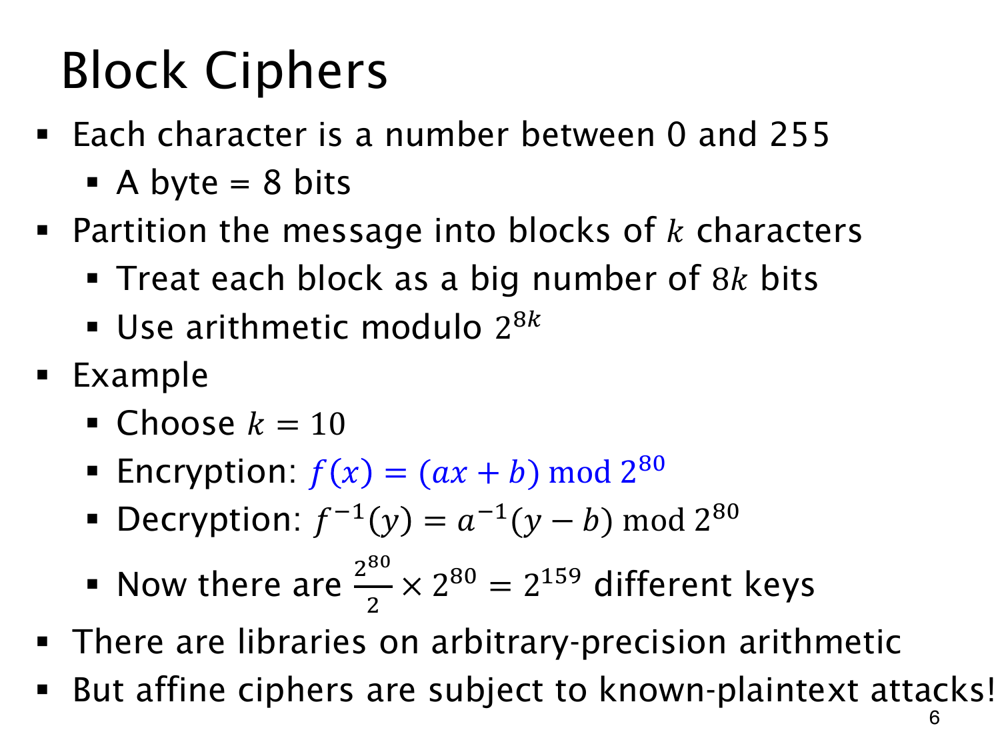

L1.14 · 第 6 页讲解原文
查看这一页课件

十个字节作为一个整数块
把消息编码为字节后，每个字节取 0 至 255，占 8 bits。每 k 个字节合成一个 8k 位整数，范围便是 0 至 28k−1。这是课件用于说明 block cipher（分组密码）的简化模型；其中“字符”按字节理解，一般 Unicode 字符未必只占一个字节。
取 k=10，仿射加密为
f(x)=(ax+b)mod280,
解密则反向先减 b、再乘逆元：
f−1(y)=a−1(y−b)mod280.
a 与 280 互素才可逆，即 a 必须为奇数。合法 a 有 279 个，b 有 280 个，合计 2159 个密钥。任意精度算术可以处理这些大整数。
密钥空间虽大，简单线性关系仍可能泄露密钥。已知两组明密文时，y1−y2≡a(x1−x2)；若明文差可逆，就能求出 a，再求 b。这正是 known-plaintext attack（已知明文攻击）提示所指的结构弱点。